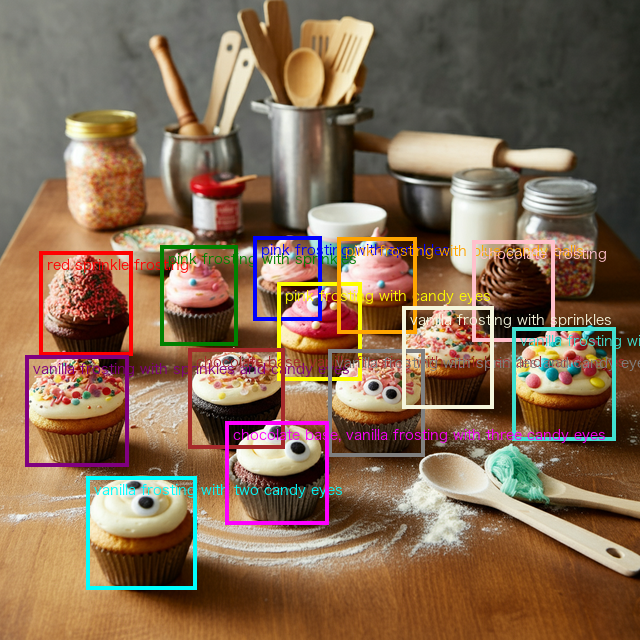
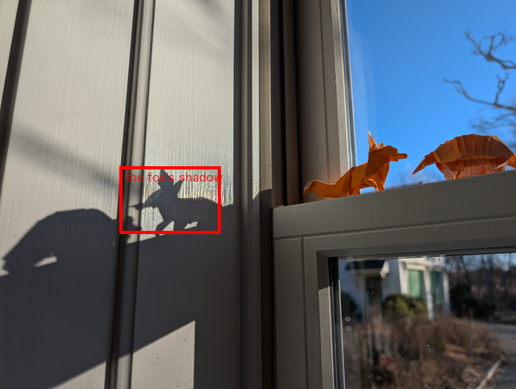
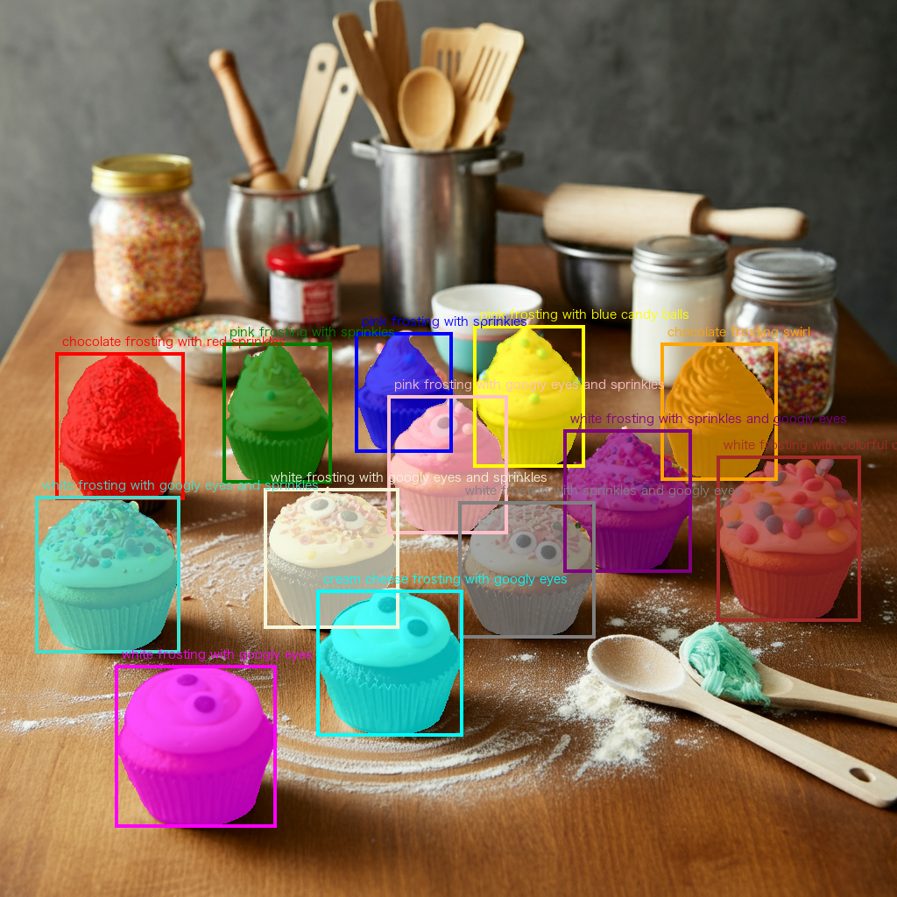

# Install the Google Gen AI SDK
!pip install -U -q google-genai
# Import the necessary libraries
import os
import requests
import io
import json
import numpy as np
from PIL import Image, ImageDraw, ImageFont, ImageColor
import torch
from dotenv import load_dotenv
load_dotenv(dotenv_path='/Users/earlpotters/Documents/personal/blog/.env')
# Initialize the Google Gen AI client
from google import genai
from google.genai import types
# Set your API key
# In a production environment, use environment variables or secure secret management
GOOGLE_API_KEY = os.environ.get('GOOGLE_API_KEY') # Replace with your API key
client = genai.Client(api_key=GOOGLE_API_KEY)
Disclaimer
This is a copy of the AI Jupyter post from this Colab notebook. All rights and credit go to the original author.
This notebook explores Gemini 2.5’s spatial understanding capabilities, including object detection, bounding boxes, and segmentation. Building on the Spatial understanding example from AI Studio, we’ll demonstrate how to use the Gemini API to detect objects in images, draw bounding boxes, and generate segmentation masks.
Note: The complete code for this article is available in this Colab notebook.
Introduction
The ability to understand spatial relationships and identify objects in images is a fundamental aspect of computer vision. Gemini 2.0, with its multimodal capabilities, excels at this task without requiring specialized computer vision training or object detection models. Using Gemini’s API, you can:
- Detect objects and draw bounding boxes around them
- Search for specific items within an image
- Label objects in multiple languages
- Apply the model’s reasoning abilities to understand spatial relationships
- Generate segmentation masks for precise object boundaries (with Gemini 2.5)
In this post, we’ll explore how to implement these capabilities using the Google Gen AI SDK, with practical examples for each use case.
Setting Up the Environment
Before we dive into the examples, let’s set up our environment by installing the required packages, configuring the API key, and initializing the client.
Choosing the Right Model
Spatial understanding works best with Gemini’s newer models. For our examples, we’ll use the gemini-2.5-pro-exp-03-25 model, which offers enhanced spatial reasoning capabilities and supports segmentation. You can also use other Gemini 2.0 models like gemini-2.0-flash for faster processing, though with potentially less accurate results.
# Select a model for spatial understanding
model_name = "gemini-2.5-pro-exp-03-25" # Best for segmentation and detailed spatial analysis
# Alternative models: "gemini-2.0-flash" for faster processing
# Configure system instructions for better results
bounding_box_system_instructions = """
Return bounding boxes as a JSON array with labels. Never return masks or code fencing. Limit to 25 objects.
If an object is present multiple times, name them according to their unique characteristic (colors, size, position, unique characteristics, etc..).
"""
# Configure safety settings
safety_settings = [
types.SafetySetting(
category="HARM_CATEGORY_DANGEROUS_CONTENT",
threshold="BLOCK_ONLY_HIGH",
),
]Utility Functions for Visualization
We’ll create some helper functions to parse the model’s output and visualize the bounding boxes and segmentation masks.
# Function to draw bounding boxes on an image
def plot_bounding_boxes(im, bounding_boxes):
"""
Plots bounding boxes on an image with markers for each name, using PIL, normalized coordinates, and different colors.
Args:
im: The PIL Image object.
bounding_boxes: A list of BoundingBox objects.
"""
# Create a copy of the image to draw on
img = im.copy()
width, height = img.size
# Create a drawing object
draw = ImageDraw.Draw(img)
# Define a list of colors for different objects
colors = [
'red', 'green', 'blue', 'yellow', 'orange', 'pink', 'purple',
'brown', 'gray', 'beige', 'turquoise', 'cyan', 'magenta',
'lime', 'navy', 'maroon', 'teal', 'olive', 'coral', 'lavender',
'violet', 'gold', 'silver'
] + [colorname for (colorname, colorcode) in ImageColor.colormap.items()]
# Try to load a font that supports CJK characters
font = None
try:
# Try different fonts that might support CJK characters
font_paths = [
"NotoSansCJK-Regular.ttc",
"/System/Library/Fonts/ヒラギノ角ゴシック W3.ttc", # Common on macOS
"/usr/share/fonts/truetype/noto/NotoSansCJK-Regular.ttc", # Common on Linux
"/Library/Fonts/Arial Unicode.ttf"
]
for path in font_paths:
try:
font = ImageFont.truetype(path, size=14)
break
except (OSError, IOError):
continue
except Exception as e:
print(f"Could not load CJK font: {e}")
# If no CJK fonts are available, use a basic approach that avoids Unicode issues
if font is None:
print("Warning: No CJK font found. Text with non-Latin characters may not display correctly.")
font = ImageFont.load_default()
# Iterate over the bounding boxes
for i, bounding_box in enumerate(bounding_boxes):
# Select a color from the list
color = colors[i % len(colors)]
# Convert normalized coordinates to absolute coordinates
abs_y1 = int(bounding_box.box_2d[0]/1000 * height)
abs_x1 = int(bounding_box.box_2d[1]/1000 * width)
abs_y2 = int(bounding_box.box_2d[2]/1000 * height)
abs_x2 = int(bounding_box.box_2d[3]/1000 * width)
# Ensure coordinates are in the correct order
if abs_x1 > abs_x2:
abs_x1, abs_x2 = abs_x2, abs_x1
if abs_y1 > abs_y2:
abs_y1, abs_y2 = abs_y2, abs_y1
# Draw the bounding box
draw.rectangle(((abs_x1, abs_y1), (abs_x2, abs_y2)), outline=color, width=4)
# Draw the text label if present
if hasattr(bounding_box, "label"):
try:
draw.text((abs_x1 + 8, abs_y1 + 6), bounding_box.label, fill=color, font=font)
except UnicodeEncodeError:
# Fallback for Unicode errors - print ASCII version of label
ascii_label = bounding_box.label.encode('ascii', 'replace').decode('ascii')
draw.text((abs_x1 + 8, abs_y1 + 6), ascii_label, fill=color, font=font)
return imgObject Detection with Bounding Boxes
Our first example demonstrates basic object detection. We’ll ask Gemini to identify objects in an image and draw bounding boxes around them.
# Load a sample image
def load_image(url):
"""Load an image from a URL or local path."""
if url.startswith(('http://', 'https://')):
response = requests.get(url, stream=True)
img = Image.open(io.BytesIO(response.content))
else:
img = Image.open(url)
return img
# Sample image URLs
image_urls = {
"cupcakes": "https://storage.googleapis.com/generativeai-downloads/images/Cupcakes.jpg",
"socks": "https://storage.googleapis.com/generativeai-downloads/images/socks.jpg",
"vegetables": "https://storage.googleapis.com/generativeai-downloads/images/vegetables.jpg",
"bento": "https://storage.googleapis.com/generativeai-downloads/images/Japanese_Bento.png",
"origami": "https://storage.googleapis.com/generativeai-downloads/images/origamis.jpg"
}
# Download a sample image
image_url = image_urls["cupcakes"]
image = load_image(image_url)
# Resize the image for better performance
image.thumbnail([640, 640], Image.Resampling.LANCZOS)
# Display the original image
imageNow let’s detect objects in the image. We’ll ask Gemini to identify the cupcakes and label them based on their toppings.
# Import Pydantic for schema definition
from pydantic import BaseModel, Field
from typing import List
# Define our Pydantic model for object detection
class BoundingBox(BaseModel):
box_2d: List[int] = Field(description="Normalized coordinates [y1, x1, y2, x2] from 0-1000")
label: str = Field(description="Description of the object's appearance")
# Define our prompt for object detection
prompt = "Detect the 2d bounding boxes of the cupcakes (with 'label' as topping description)"
# Send the request to the Gemini API
response = client.models.generate_content(
model=model_name,
contents=[prompt, image],
config=types.GenerateContentConfig(
response_schema=list[BoundingBox],
response_mime_type="application/json",
system_instruction=bounding_box_system_instructions,
temperature=0.5,
safety_settings=safety_settings,
)
)
# Display the model's response
print("Model response:")
print(response.text)
# Visualize the bounding boxes
result_image = plot_bounding_boxes(image, response.parsed)
result_imageModel response:
[
{"box_2d": [393, 62, 556, 207], "label": "red sprinkle frosting"},
{"box_2d": [384, 250, 540, 371], "label": "pink frosting with sprinkles"},
{"box_2d": [369, 396, 500, 503], "label": "pink frosting with sprinkles"},
{"box_2d": [442, 434, 594, 565], "label": "pink frosting with candy eyes"},
{"box_2d": [371, 528, 521, 651], "label": "pink frosting with blue candy balls"},
{"box_2d": [375, 739, 534, 867], "label": "chocolate frosting"},
{"box_2d": [556, 40, 729, 201], "label": "vanilla frosting with sprinkles and candy eyes"},
{"box_2d": [544, 295, 700, 445], "label": "chocolate base, vanilla frosting with sprinkles and candy eyes"},
{"box_2d": [546, 514, 713, 664], "label": "vanilla frosting with sprinkles and candy eyes"},
{"box_2d": [479, 629, 638, 771], "label": "vanilla frosting with sprinkles"},
{"box_2d": [511, 800, 688, 962], "label": "vanilla frosting with colorful candy pieces"},
{"box_2d": [744, 135, 921, 307], "label": "vanilla frosting with two candy eyes"},
{"box_2d": [658, 353, 819, 514], "label": "chocolate base, vanilla frosting with three candy eyes"}
]
As you can see, Gemini successfully identified each cupcake and provided a descriptive label for each topping. The model returns bounding box coordinates in a normalized format (0-1000 range) with the structure [y1, x1, y2, x2], where:
y1: Top edge (normalized)x1: Left edge (normalized)y2: Bottom edge (normalized)x2: Right edge (normalized)
Note that Gemini places the y-coordinates first, contrary to the common convention in computer vision libraries where x-coordinates typically come first.
Searching Within an Image
Gemini can also perform targeted searches within images, identifying specific objects that match certain criteria. Let’s try this with a different image.
# Load a different image for search example
image = load_image(image_urls["socks"])
image.thumbnail([640, 640], Image.Resampling.LANCZOS)
# Define a search prompt
prompt = "Show me the positions of the socks with the face"
# Send the request to the Gemini API
response = client.models.generate_content(
model=model_name,
contents=[prompt, image],
config=types.GenerateContentConfig(
response_schema=list[BoundingBox],
response_mime_type="application/json",
system_instruction=bounding_box_system_instructions,
temperature=0.5,
safety_settings=safety_settings,
)
)
# Display the model's response
print("Model response:")
print(response.text)
# Visualize the search results
result_image = plot_bounding_boxes(image, response.parsed)
result_imageModel response:
[
{"box_2d": [57, 249, 387, 516], "label": "light blue sock with face (top left)"},
{"box_2d": [235, 631, 650, 860], "label": "light blue sock with face (top right)"}
]This example demonstrates Gemini’s ability to understand natural language queries about visual content. The model identified specifically the socks with faces on them, ignoring other socks in the image. This capability is particularly useful for:
- Content moderation: Finding specific objects or content that may require review
- Visual search: Enabling users to search for specific items within images
- Product identification: Locating particular products in retail or inventory images
- Data annotation: Automating the process of identifying and labeling specific objects
Multilingual Capabilities
Gemini’s multimodal understanding extends to multiple languages. Let’s demonstrate this by asking the model to label food items in a Japanese bento box with both Japanese characters and English translations.
# Load the Japanese bento image
image = load_image(image_urls["bento"])
image.thumbnail([640, 640], Image.Resampling.LANCZOS)
# Define a multilingual prompt
prompt = "Detect food, label them with Japanese characters + english translation."
# Send the request to the Gemini API
response = client.models.generate_content(
model=model_name,
contents=[prompt, image],
config=types.GenerateContentConfig(
response_schema=list[BoundingBox],
response_mime_type="application/json",
system_instruction=bounding_box_system_instructions,
temperature=0.5,
safety_settings=safety_settings,
)
)
# Visualize the multilingual labels
result_image = plot_bounding_boxes(image, response.parsed)
result_imageThis example showcases Gemini’s multilingual capabilities. The model correctly identified different Japanese food items and provided both Japanese characters and English translations in the labels. This functionality is valuable for:
- Cross-cultural applications: Creating inclusive experiences for users from different linguistic backgrounds
- Translation services: Providing visual translation for food items, products, or signs
- Educational tools: Teaching vocabulary in different languages with visual references
- Cultural understanding: Helping users understand items from different cultures
Advanced Reasoning with Spatial Understanding
Gemini can go beyond simple object detection to perform more complex spatial reasoning tasks. Let’s demonstrate this by asking the model to find the shadow of a specific origami figure.
# Load the origami image
image = load_image(image_urls["origami"])
image.thumbnail([640, 640], Image.Resampling.LANCZOS)
# Define a prompt that requires spatial reasoning
prompt = "Draw a square around the fox's shadow"
# Send the request to the Gemini API
response = client.models.generate_content(
model=model_name,
contents=[prompt, image],
config=types.GenerateContentConfig(
response_schema=list[BoundingBox],
response_mime_type="application/json",
system_instruction=bounding_box_system_instructions,
temperature=0.5,
safety_settings=safety_settings,
)
)
# Visualize the result of the spatial reasoning task
result_image = plot_bounding_boxes(image, response.parsed)
result_image
This example demonstrates Gemini’s sophisticated visual reasoning capabilities. The model was able to:
- Identify the fox origami figure in the image
- Understand the concept of a shadow
- Locate the shadow cast by the fox figure
- Draw a bounding box specifically around the shadow
This type of spatial reasoning can be applied to numerous real-world scenarios:
- Scene understanding: Analyzing relationships between objects in a scene
- Visual reasoning: Answering questions about spatial arrangements
- Assistive technology: Helping visually impaired users understand spatial relationships
Image Segmentation with Gemini 2.5
With Gemini 2.5 models, we can go beyond bounding boxes to generate more precise segmentation masks that outline the exact boundaries of objects. Let’s implement the necessary utilities and demonstrate this capability.
# Utilities for segmentation masks
import dataclasses
import base64
@dataclasses.dataclass(frozen=True)
class SegmentationMask:
# bounding box pixel coordinates (not normalized)
y0: int # in [0..height - 1]
x0: int # in [0..width - 1]
y1: int # in [0..height - 1]
x1: int # in [0..width - 1]
mask: np.array # [img_height, img_width] with values 0..255
label: str
def parse_segmentation_masks(
predicted_str: str, *, img_height: int, img_width: int
) -> list[SegmentationMask]:
"""Parse segmentation masks from model output."""
items = json.loads(predicted_str)
masks = []
for item in items:
# Extract bounding box coordinates
abs_y0 = int(item["box_2d"][0] / 1000 * img_height)
abs_x0 = int(item["box_2d"][1] / 1000 * img_width)
abs_y1 = int(item["box_2d"][2] / 1000 * img_height)
abs_x1 = int(item["box_2d"][3] / 1000 * img_width)
# Validate bounding box
if abs_y0 >= abs_y1 or abs_x0 >= abs_x1:
print("Invalid bounding box", item["box_2d"])
continue
label = item["label"]
png_str = item["mask"]
# Validate mask format
if not png_str.startswith("data:image/png;base64,"):
print("Invalid mask")
continue
# Decode mask
png_str = png_str.removeprefix("data:image/png;base64,")
png_str = base64.b64decode(png_str)
mask = Image.open(io.BytesIO(png_str))
# Calculate dimensions
bbox_height = abs_y1 - abs_y0
bbox_width = abs_x1 - abs_x0
if bbox_height < 1 or bbox_width < 1:
print("Invalid bounding box")
continue
# Resize mask to match bounding box
mask = mask.resize((bbox_width, bbox_height), resample=Image.Resampling.BILINEAR)
np_mask = np.zeros((img_height, img_width), dtype=np.uint8)
np_mask[abs_y0:abs_y1, abs_x0:abs_x1] = mask
masks.append(SegmentationMask(abs_y0, abs_x0, abs_y1, abs_x1, np_mask, label))
return masks
def overlay_mask_on_img(
img: Image,
mask: np.ndarray,
color: str,
alpha: float = 0.7
) -> Image.Image:
"""Overlay a segmentation mask on an image."""
if not (0.0 <= alpha <= 1.0):
raise ValueError("Alpha must be between 0.0 and 1.0")
# Convert the color name to RGB
try:
color_rgb = ImageColor.getrgb(color)
except ValueError as e:
raise ValueError(f"Invalid color name '{color}'. Error: {e}")
# Prepare the image for alpha compositing
img_rgba = img.convert("RGBA")
width, height = img_rgba.size
# Create the colored overlay
alpha_int = int(alpha * 255)
overlay_color_rgba = color_rgb + (alpha_int,)
# Create a transparent layer
colored_mask_layer_np = np.zeros((height, width, 4), dtype=np.uint8)
# Apply the overlay color where the mask is active
mask_np_logical = mask > 127
colored_mask_layer_np[mask_np_logical] = overlay_color_rgba
# Convert back to PIL and composite
colored_mask_layer_pil = Image.fromarray(colored_mask_layer_np, 'RGBA')
result_img = Image.alpha_composite(img_rgba, colored_mask_layer_pil)
return result_img
def plot_segmentation_masks(img: Image, segmentation_masks: list[SegmentationMask]):
"""Plot segmentation masks, bounding boxes, and labels on an image."""
# Define colors
colors = [
'red', 'green', 'blue', 'yellow', 'orange', 'pink', 'purple',
'brown', 'gray', 'beige', 'turquoise', 'cyan', 'magenta'
] + [colorname for (colorname, colorcode) in ImageColor.colormap.items()]
# Try to load a font that supports CJK characters
font = None
try:
# Try different fonts that might support CJK characters
font_paths = [
"NotoSansCJK-Regular.ttc",
"/System/Library/Fonts/ヒラギノ角ゴシック W3.ttc", # Common on macOS
"/usr/share/fonts/truetype/noto/NotoSansCJK-Regular.ttc", # Common on Linux
"/Library/Fonts/Arial Unicode.ttf"
]
for path in font_paths:
try:
font = ImageFont.truetype(path, size=14)
break
except (OSError, IOError):
continue
except Exception as e:
print(f"Could not load CJK font: {e}")
# If no CJK fonts are available, use a basic approach that avoids Unicode issues
if font is None:
print("Warning: No CJK font found. Text with non-Latin characters may not display correctly.")
font = ImageFont.load_default()
# Create a copy of the image
img = img.copy()
# Step 1: Overlay all masks
for i, mask in enumerate(segmentation_masks):
color = colors[i % len(colors)]
img = overlay_mask_on_img(img, mask.mask, color)
# Step 2: Draw all bounding boxes
draw = ImageDraw.Draw(img)
for i, mask in enumerate(segmentation_masks):
color = colors[i % len(colors)]
draw.rectangle(
((mask.x0, mask.y0), (mask.x1, mask.y1)), outline=color, width=4
)
# Step 3: Draw all text labels
for i, mask in enumerate(segmentation_masks):
color = colors[i % len(colors)]
if mask.label != "":
try:
draw.text((mask.x0 + 8, mask.y0 - 20), mask.label, fill=color, font=font)
except UnicodeEncodeError:
# Fallback for Unicode errors - print ASCII version of label
ascii_label = mask.label.encode('ascii', 'replace').decode('ascii')
draw.text((mask.x0 + 8, mask.y0 - 20), ascii_label, fill=color, font=font)
return imgNow let’s test the segmentation capability with an image containing cupcakes.
# Define Pydantic model for segmentation masks
class SegmentationMaskModel(BaseModel):
box_2d: List[int] = Field(description="Normalized coordinates [y0, x0, y1, x1] from 0-1000")
mask: str = Field(description="Base64-encoded PNG image representing the segmentation mask")
label: str = Field(description="Description of the object")
# Load the cupcakes image for segmentation
image = load_image(image_urls["cupcakes"])
image.thumbnail([1024, 1024], Image.Resampling.LANCZOS)
# Define a prompt for segmentation
prompt = """Give the segmentation masks for each cupcake.
Output a JSON list of segmentation masks where each entry contains the 2D bounding box in the key "box_2d",
the segmentation mask in key "mask", and the text label in the key "label" describing the topping."""
# Send the request to the Gemini API (note: no system instruction for segmentation)
response = client.models.generate_content(
model=model_name,
contents=[prompt, image],
config=types.GenerateContentConfig(
response_schema=list[SegmentationMaskModel],
response_mime_type="application/json",
temperature=0.5,
safety_settings=safety_settings,
)
)
# Parse and visualize the segmentation masks
segmentation_masks = parse_segmentation_masks(response.text, img_height=image.size[1], img_width=image.size[0])
result_image = plot_segmentation_masks(image, segmentation_masks)
result_image
Understanding Gemini’s Segmentation Output
Gemini’s segmentation output is more complex than simple bounding boxes. Let’s break down what the model returns:
Bounding box (
box_2d): A 4-element array[y0, x0, y1, x1]with normalized coordinates between 0 and 1000.Label (
label): A text string describing the segmented object.Mask (
mask): A base64-encoded PNG image representing the segmentation mask. This mask is:- Sized to match the dimensions of the bounding box
- Contains grayscale values (0-255) indicating the probability that each pixel belongs to the object
- Needs to be decoded, resized, and applied to the original image
The segmentation process involves:
- Decoding: Converting the base64 string to an image
- Resizing: Matching the mask to the bounding box dimensions
- Thresholding: Deciding which pixels belong to the object (typically values > 127)
- Integration: Placing the mask in the correct position in the full-sized image
- Visualization: Overlaying the mask with a semi-transparent color
This detailed segmentation capability allows for much more precise object delineation than bounding boxes alone, making it valuable for:
- Image editing: Precisely separating objects from backgrounds
- Medical imaging: Outlining organs or anomalies
- Product visualization: Creating cutouts of products
- AR/VR applications: Precise occlusion and placement of virtual objects
Conclusion
In this post, we’ve explored Gemini 2.0’s spatial understanding capabilities, from basic object detection with bounding boxes to sophisticated segmentation with Gemini 2.5. These capabilities enable a wide range of applications without requiring specialized computer vision expertise or custom models.
Key takeaways:
Simple integration: With just a few lines of code, you can implement powerful object detection and segmentation.
Natural language interface: Use plain language to describe what you’re looking for, making the API accessible to users without technical expertise.
Multilingual support: Label objects in multiple languages, facilitating cross-cultural applications.
Advanced reasoning: Leverage Gemini’s understanding of spatial relationships to solve complex visual tasks.
Precise segmentation: With Gemini 2.5, get pixel-perfect object boundaries for detailed image analysis.
These capabilities open up numerous possibilities for developers, from enhancing accessibility to creating immersive AR experiences. By combining Gemini’s visual understanding with its language capabilities, you can build intuitive, powerful applications that bridge the gap between vision and language.
For more examples and applications, check out the Spatial understanding example from AI Studio, or explore the Gemini 2.0 cookbook for other examples of Gemini’s capabilities.